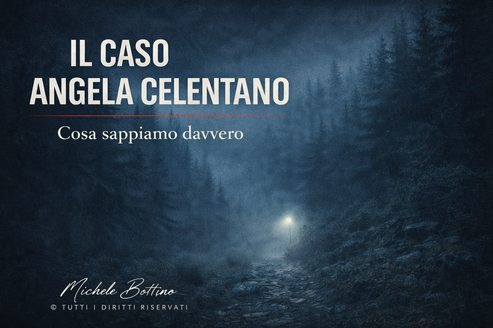

Serie metodologica
Angela Celentano
Evento certo, ultimo avvistamento instabile, continuità non stabilizzata.
Apri la strutturaQuesto percorso raccoglie i casi in cui l’evento iniziale è certo, ma il sistema perde continuità nel punto decisivo dell’ultimo passaggio osservabile e non riesce più a stabilizzare la sequenza.
Qui rientrano i casi in cui il problema principale non è l’assenza totale dell’evento, ma la rottura del raccordo immediato che dovrebbe trasformare l’evento in sequenza verificabile.
Il sistema non perde il fatto iniziale. Perde il punto di continuità che avrebbe dovuto renderlo leggibile fino in fondo.

Evento certo, ultimo avvistamento instabile, continuità non stabilizzata.
Apri la strutturaConfigurazione compatibile con una forte discontinuità tra evento originario, piste successive e mancata stabilizzazione della sequenza.
Per rientrare nella visione completa della serie metodologica e consultare gli altri casi classificati, torna all’indice generale delle strutture dell’irrisolto.
Torna a Le strutture dell’irrisolto